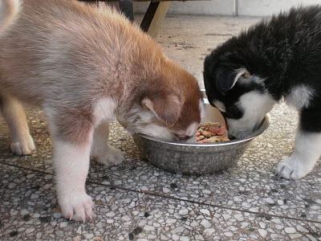

Consejos para la elección de un buen pienso

Todos en algún momento hemos tenido esta duda. Desde que elegimos el pienso para nuestro primer perro hasta que, cada cierto tiempo, nos siembra la duda de si estarás dando lo mejor a tu peludo.
Por ello os dejamos este artículo de la Asociación SOSGolden sobre qué propiedades hay que fijarse para comparar y elegir un pienso óptimo.
Esperamos que os guste :)
Nórdicos en Adopción
Desde Sosgolden queremos ayudarte a analizar el alimento que le das a tus perros/gatos para que tu mismo puedas valorar la calidad del producto. No nos mueve ningún interés comercial, sólo el interés por el bienestar de nuestros animales. Estas son las claves que debes seguir para elegir un buen pienso:
1. Las principales fuentes de alimentación deberían ser carne o pescado. Estos han de ser indicados como producto fresco o deshidratado. Y especificar que tipo de carne. Si incorporan la carne o el pescado en forma de harina (harina de carne de pollo, etc.) la calidad es mucho peor. Esto nos indicaría un pienso de mala calidad.
2. Cuantas más variedades de fuentes principales de alimentación se incluyan mejor es el pienso. Por ejemplo, un pienso que contiene carne fresca de pollo, ternera y cordero será equilibrado.
3. Un buen pienso no debería incluir subproductos (by products) de ningún tipo.
4. No deben incluir conservantes químicos.. Si el pienso incluye alguno de estos descártalo inmediatamente. Son cancerígenos y prohibidos para el consumo humano. BHA, BHT, etoxiquín (butylated hydroxyanisola (BHA), butylated hydroxytoluene (BHT), propyl gallate, propylene glycol, o ethoxyquin).
5. Libre de maíz. Los piensos que contienen maíz son de menor calidad. La dieta ideal de nuestros perros no debería incluir cereales, ni trigo, ni maíz ya que este no es un alimento natural y es por ello de difícil digestión. Por desgracia la gran mayoría incluye maíz ya que este ingrediente se incluye sólo para abaratar costes. El maíz es muy difícil de digerir para los perros, y es uno de los principales alergenos. El único que se debería tolerar es el arroz como única fuente de grano.
6. Uno de los puntos más importantes a comprobar es si se especifica que los ingredientes utilizados son aptos para el consumo humano (human-grade). Tanto los productos, como los subproductos. Esto es muy importante si queremos que nuestros perros o gatos coman alimentos de calidad y que hayan pasado todos los controles necesarios. Sino se corre el riesgo de que estén incluyendo carne de animales enfermos, o sin identificar, de cadáveres ya descompuestos, y hasta las plumas y picos de las aves utilizadas como fuente de proteína.
7. Extrusionado o horneado. Otro punto a favor es saber si el alimento ha sido horneado en lugar de extrusionado. Este último método reduce al mínimo las proporciones del alimento. Quiere decir que en realidad esa bola de pienso contiene más aire que alimento.
8. Si el pienso contiene verduras, frutas, cebada, glucosalina y condroitina son un punto a favor para escoger ese pienso.
9. Como último punto, y confiando en que tú que estás leyendo este artículo miras por el bienestar de tu amigo peludo, es importante y justo que el pienso certifique que cumple con el Certificado de Bienestar Animal. Esto garantizará que no han necesitado experimentar con animales como tu amigo para elaborar ese pienso, entre muchas otras cosas.
Otros ingredientes que pueden llevar su pienso o que puedes dar como suplemento según su uso o necesidad:
- Grasa de pollo (Omega 6)- Esencial para mantener la piel y el pelo saludable. Es de fácil digestión.
- Grasa de pescado, o pescado concentrado (Omega 3): Ayuda a la desinflamación de la piel, ayuda a aliviar la comezón dérmica y otros problemas de la piel.
- Semilla de lino (Omega 3) Contribuye a controlar reacciones ocasionadas por picaduras de pulga. Le da brillo y mantiene el pelo lustroso.
- Aceite de girasol (Omega 6)- Ayuda a evitar una piel seca y pelo sin brillo.
- Lecitina- Ayuda a emulsificar el colesterol, y ayuda en la digestión y absorción de las grasas.
- Ácido linoléico (Omega 6)- Ayuda a evitar pérdidas de humedad en la piel, contribuyendo a preservar el manto suave y brilloso.
- Salvia- Ayuda a preservar las funciones cognitivas, aumenta la capacidad de concentración, y ayuda a sanar erupciones y heridas en la piel. Se utiliza también para regular desórdenes alimenticios.
- Vitamina E (o tocoferoles)- Se utiliza como conservador natural.Ayuda a mantener la piel sana. Sirve como antioxidante.
- Biotina- Ayuda al crecimiento del pelo.
- Arándano- Previene la reproducción de bacterias en riñones y vías urinarias. Ayuda a prevenir la cistitis.
- Romero- Estimula el sistema circulatorio, ayuda a mejorar el aliento, ayuda al crecimiento del pelo. Aumenta la palatabilidad de los alimentos.
- Manzana- Aporta fibra soluble, reduce los niveles de colesterol y normaliza los niveles de azúcar en sangre.
- Amaranto- Aporta vitaminas, asienta el estómago, reduce la inflamación de tejidos suaves, ayuda a eliminar parásitos del sistema digestivo.
- Levadura de cerveza- Aporta vitamina B, contiene 16 amino ácidos, 14 minerales y 17 vitaminas más. Protege de y ayuda a eliminar micotoxinas, las cuales dañan el hígado y otros órganos.
- Yuca- Ayuda a disminuir el mal aliento, y el mal olor de las heces. Es un agente limpiador que también se utiliza para disminuir problemas dérmicos.
- Huevos- Son una rica fuente de proteínas, y contienen todos los amino ácidos esenciales.
- Lactobacillus Acidophilus, Streptococcus Faecium (Yogur natural)- Aportan prebióticos, para asegurar una buena flora intestinal. Apoyan la digestión, evitan la proliferación de bacterias en el sistema digestivo, ayudan a prevenir problemas gástricos, y ayudan al organismo a afrontar correctamente situaciones estresantes.
- Levadura- Estimulan la producción de enzimas en el sistema digestivo. – Cobre y Hierro- Previenen la anemia. Pequeñas cantidades de cobre aseguran una correcta utilización del hierro.
Fuente: http://sosgolden.org/consejos/elegir-un-buen-pienso/
Añadir nuevo comentario